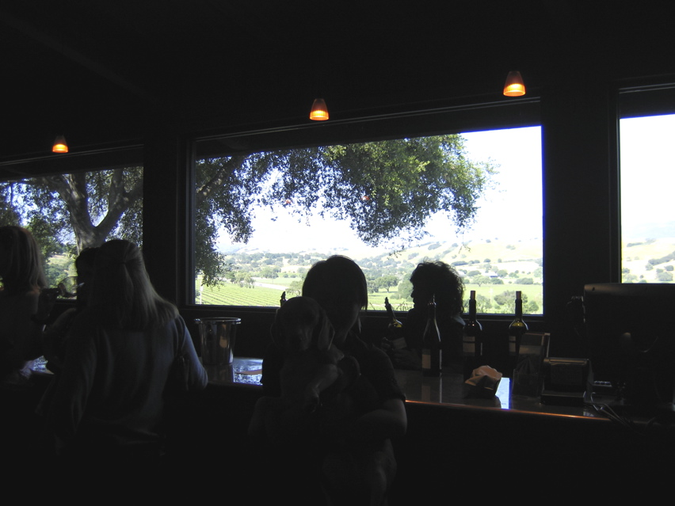

<--Previous Up Next-->

Firestone
Our last taste on Sunday was at Firestone, where picture windows frame a spectacular view of Foxen Canyon. This wasn't the winery where that guy from "Sideways" drank from the dump bucket, but we thought at the time it was, and wondered whether that's why the buckets they have there now are built one-way so you can't drink from them.